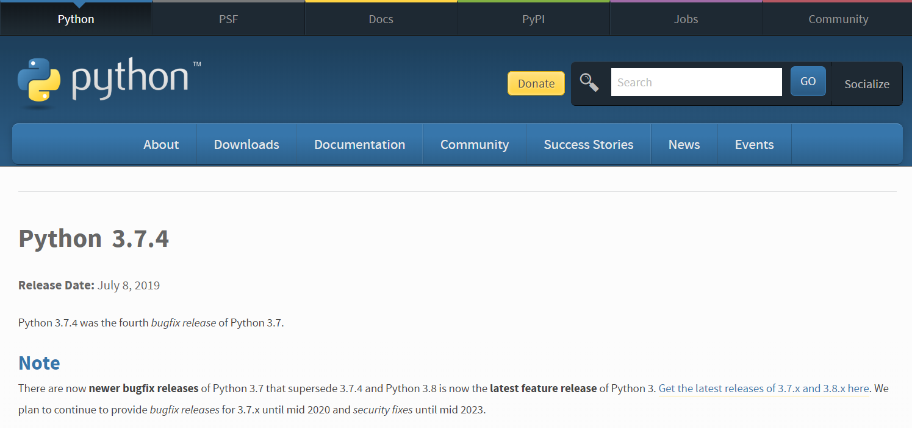
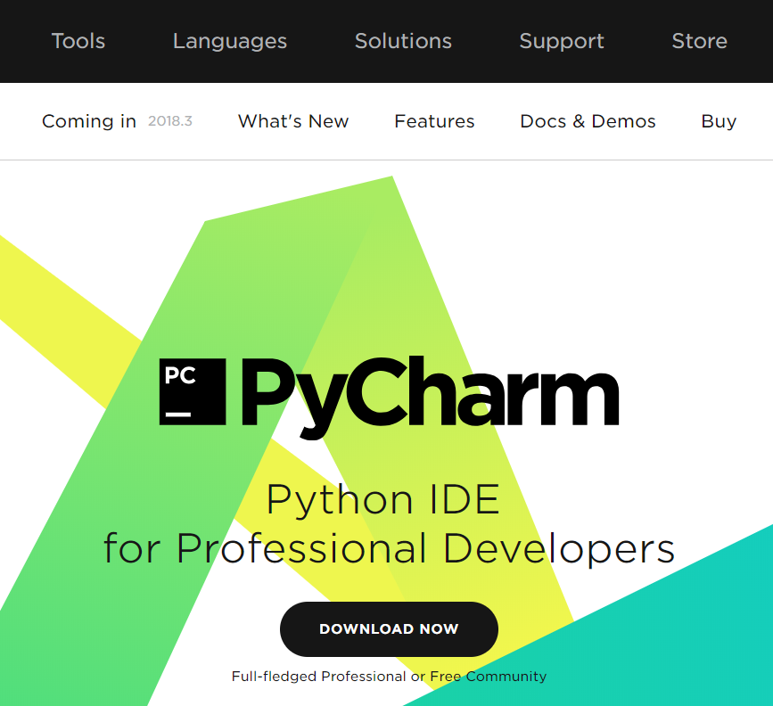

Python 기초강의(1) - Introduction
Python 기초강의는 여러 절로 구성되어 있습니다.
- Python 기초강의(1) - Introduction
- Python 기초강의(2) - Python 기본
- Python 기초강의(3) - Python 제어문
- Python 기초강의(4) - Python function
- Python 기초강의(5) - Python 연습문제(1)
- Python 기초강의(6) - Python 객체지향
- Python 기초강의(7) - Python Magic Function
- Python 기초강의(8) - Python First Class
- Python 기초강의(9) - Python Closure
- Python 기초강의(10) - Python Decorator
- Python 기초강의(11) - Python Generator
- Python 기초강의(12) - Python Module
- Python 기초강의(13) - Python Exception & File
- Python 기초강의(14) - Python 연습문제(2)
- Python Django 웹 프레임워크(1) - introduction
- Python Django 웹 프레임워크(2) - Poll project 개발(1)
- Python Django 웹 프레임워크(3) - Poll project 개발(2)
- Python Django 웹 프레임워크(4) - Poll project 개발(3)
- Python Django 웹 프레임워크(5) - Poll project 개발(4)
- Python Django 웹 프레임워크(6) - Poll project 개발(5)
- Python Django 웹 프레임워크(7) - Django의 개발방식
- Python Django 웹 프레임워크(8) - Blog project 개발
영상설명
이번 영상은 Python 언어의 개요 및 개발환경설정에 대한 영상입니다.
Python 개요
Python 개발환경 설정(일반적인 Python 개발환경)
Python 개발환경 설정(Anaconda를 이용한 Jupyter Notebook 개발환경)
Why Python
Python 기초강의 - Python 소개 및 환경설정
Python 개요
Python은 1990년 귀도 반 로섬에 의해 개발된 프로그래밍 언어입니다.
과거에는 프로그래밍 교육위주로 사용이 되었지만 현재는 데이터 분석, 머신러닝 위주의
실무에서 점점 더 많이 사용하는 추세입니다.
Python의 특징
shallow learning curve: 문법이 쉬워 빠르게 배우고 활용할 수 있습니다. 특히 기존 프로그래밍언어를 다루었던 개발자들은 더욱 더 쉽게 Python을 배울 수 있습니다.무료/간결/강력: 시스템 프로그래밍을 제외한 대부분의 프로그래밍을 할 수 있습니다. 빠른 수행속도가 필요한 경우 필요한 부분만 C 언어로 제작해서 Python안에 포함시켜 사용할 수 있습니다.가독성 높은 코드: Python은indentation이 강제되므로 가독성 높은 코드를 생산할 수 있습니다. 다른언어에서처럼 block을 표현할 때 사용하는 중괄호({ })를 사용하지 않습니다. 대신 indentation(들여쓰기)를 이용해 블럭을 표현합니다.다양한 분야의 프로그래밍: Python은 Web Programming, Database Programming, Data Analysis Programming 등에 폭넓게 이용할 수 있지만 System Programming과 Mobile App Programming에는 적합하지 않습니다. Mobile App 같은 경우 별도의 package를 이용하면APK파일을 생성할 수 있지만 굳이 python으로 Android App을 개발할 필요는 없어보입니다.
Python 개발환경 설정(일반적인 Python 개발환경)
일반적인 Python 개발환경부터 알아보겠습니다.
먼저 Python Official Homepage에 접속해 다운로드 페이지에서
Python을 다운로드 합니다. 현재 버전은 3.8.2버전이지만 차후에 TensorFlow 2.0을 사용하기 위해서 Python 3.7.4버전을
다운로드 합니다.(이글을 쓰는 시점 기준으로 TensorFlow 2.0은 Python 3.8을 지원하지 않습니다.)
또한 언어 특성상 Python 2.7버전과 3.x버전은 차이가 있습니다.

다운로드가 끝나면 기본 형태로 설치를 진행합니다. PATH 추가하는 부분은 포함시켜 설치를 진행해야 사용하기 편합니다.
이제 사용할 IDE(Integrated Development Environment)를 설치합니다. 일반적으로
PyCharm을 많이 이용합니다. Community edition과 Professional edition이 있습니다.
Professional edition은 30일 trial version으로 사용할 수 있습니다. 그 이후에는 비용을 지불해야 합니다.
물론 지우고 다시 깔아서 쓰는 방법도 있습니다. 기능면으로는 당연히 Professional Edition이 좋기 때문에
그리고 추후에 Jupyter Notebook을 PyCharm에서 사용할 수 있도록 Professional Edition을 사용합니다.
JetBrains사이트로 접속한 후 PyCharm을 다운로드 받습니다. 
다운로드가 완료되면 기본형태로 설치합니다. 설치가 끝나면 프로젝트를 생성할 수 있는 화면이 나오게 됩니다.
Python 개발환경 설정(Anaconda를 이용한 Jupyter Notebook 개발환경)
Data Analysis를 위해서 Python을 학습하고 사용할때는 Jupyter Notebook 또는 Google CoLab을
많이 이용합니다. 먼저 Anaconda를 이용해 Jupyter Notebook을 PC에 설치해서 사용하는 법에 대해 알아보고 추후에 Google CoLab에 대해서도
알아보도록 하겠습니다.
참고로 Anaconda는 Continuum Analytics에서 개발한 Python Data Science Platform 중 가장
유명한 Platform입니다. 가상환경 생성 및 데이터 분석에 필요한 여러 라이브러리들을 편하게 설치, 사용할 수 있는 환경을 제공합니다.
또한 Jupyter Notebook은 Python, R 파일을 작성하고 실행하는 개발환경을 제공하는 Web Application입니다.
Cell이라는 단위로 코드를 나누어 실행 할 수 있기 때문에 Interactive한 개발이 가능하다는 것이 가장 큰 장점입니다.
Anaconda 환경설정
- Anaconda 다운로드 및 설치
- Anaconda는 무료로 사용가능하며 python과 다수의 유용한 package를 제공하고 있습니다.
- Anaconda 설치 후, Anaconda Prompt를 관리자 권한으로 실행한 후 pip를 최신 버전으로 upgrade 합니다.
python -m pip install --upgrade pip- conda 가상 환경을 생성합니다.
conda create -n data_env python=3.7 openssl- 가상환경으로 전환하기 위해서 다음의 코드를 실행
activate data_env- jupyter notebook에서는 여러 버전의 python과 여러 개의 conda 가상환경을 구동할 수 있습니다. 하지만 기본 설정으로는 실행되지 않고
nb_conda를 설치해야 Jupyter Notebook이 설치됩니다.conda install nb_conda- jupyter notebook 설정 파일을 생성하기 위해 Anaconda prompt에서
jupyter notebook --generate-config실행 생성된 설정파일을 수정하여 실습에서 사용할 폴더를C:/jupyter_notebook로 설정한 후 해당 폴더를 생성합니다.- 실행결과 : Writing default config to: C:/Users/shmoon/.jupyter/jupyter_notebook_config.py
- 해당파일의 261라인을 다음과 같이 수정하고 해당 라인의 주석을 해제합니다.(폴더는 수동으로 생성해야 합니다.)
c.NotebookApp.notebook_dir = 'C:/jupyter_notebook'- notebook 실행 ( jupyter notebook )
가상환경 listing 및 삭제는 다음과 같이 수행합니다. 단, 삭제시 폴더는 수동으로 모두 삭제해야 합니다.
conda info --envs
conda remove --name data_env --all
Jupyter Notebook은 정말 편하게 Machine Learning 개발을 진행할 수 있도록 도와주지만
Web Application이라는 한계때문에 기존 개발 IDE에서 기본으로 제공되는 Assist와 같은
기능을 원할하게 사용하지 못한다는 단점이 있습니다. Assist가 안되는건 아닌데 사용하기가 많이
불편합니다.
이 문제는 PyCharm을 이용하면 해결할 수 있습니다. PyCharm에서 Jupyter Notebook 파일을 생성해서 사용할 수 있고 사용하는 Kernel을 Anaconda에서 설치한 Jupyter Notebook의 Kernel을 이용할 수 있습니다.
Anaconda Prompt에서 Jupyter Notebook을 실행시키면 token 키가 포함된 URL을 제공해 주는데 이를 PyCharm의 환경설정에 넣어주면 쉽게 PyCharm에서 Jupyter Notebook Kernel을 연동할 수 있습니다.
단, 이 기능은 PyCharm Community Edition은 제공하지 않고 Professional Edition만 제공합니다.
Why Python
python의 장점을 다시 한번 정리해보죠.
- 상대적으로 쉬운 언어
- interactive programming이 가능
- 강력한 데이터 분석 Library가 많음
- Open Source ( 무료 )
- R에 비해 범용적 사용이 가능
- 현재 가장 인기있는 언어
- 주의) 하위호환성 없음 (python 2.x vs. python 3.x)
End.
Python 강좌는 아래의 책과 사이트를 참조했습니다. 조금 더 자세한 사항을 알고 싶으시면 해당 사이트를 방문하세요!!
- Python Official HomePage
- 점프 투 파이썬 - 이지스 퍼블리싱
- 전문가를 위한 파이썬(Fluent Python) - 한빛미디어
- 파이썬 웹 프로그래밍 - 한빛미디어
- 이미지 출처 : Designed by rawpixel.com / Freepik